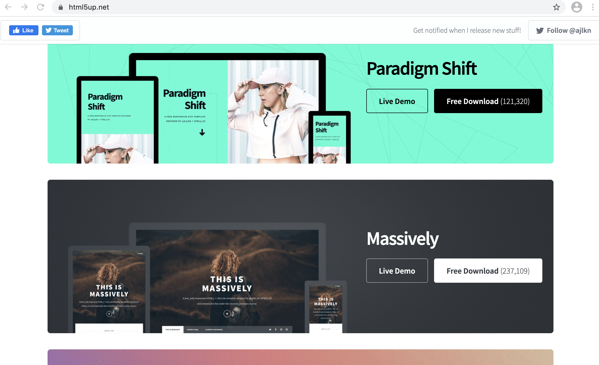
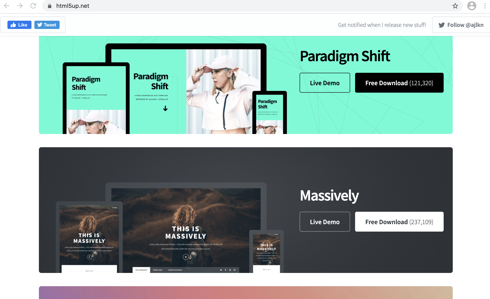

Vefsíðu hönnun
Markmið þessa verkefnis er að hanna starfhæfa vefsíðu sem hver sem er getur komist inn á. Hér er notast við vefsíðu sniðmát frá https://html5up.net/ sem er síðan sérsniðið í forritinu Brackets.
Til þess að byrja er best að finna sér sniðmát eftir þörf á Html5up.net. Þegar búið er að velja sniðmát er næsta skref að klikka á download annað hvort inni í sniðmátinu eða á vefsíðunni sjálfri.
 

Næsta skref er að opna skjalið sem var verið að niðurhala og opna html kóðann fyrir vefsíðuna. Hvort sem það er index eða generic. Þar inni í brackets er kóðanum breytt og textinn skrifaður. Vanalega er auðvelt að sjá hvar hver textabútur í kóðanum kemur inn á veðsíðunni. Ef að hann finnst ekki strax þarf bara aðeins að leita. Eftir það er þetta smá föndur. Gula eldingin á hægri myndinni efst til hægri býr til sýnishorn fyrir síðuna svo það er hægt að sjá hvernig breytingarnar líta út.
Forsíðan er vistuð undir index.html og þessi síða undir verkefni 1. Allar myndir sem ég nota eru í images möppunni. Hægt er að setja þær inn eins og ég geri en fullt af mismunandi útfærslum eru í boði. Fyrirsagnir eru merktar með header og texti með p.
Þegar vefsíðan er komin í ásættanlega mynd er kominn tími til að uploada henni á github. Ef að þú ert ekki búinn að sækja forritið git og stofna aðgang á github er það næsta skref. Það þarf að stofa repository á github sem er lítið mál, að uploada vefsíðunni er erfiði parturinn.
Ef notast er við mac skal opna terminal. Finna þarf möppuna sem vefsíðan er geymd í gegnum terminal þegar vefsíðan er fundin þarf að copy pastea inn þessa skipun. Hún ætti að vera sjánleg þegar fyrst er opnað repositorið á github.
echo "# Nafn á síðu" >> README.md
git init
git add README.md
git commit -m "first commit"
git branch -M main
git remote add origin https://github.com/þitt nafn/nafn á vefsíðu.git
git push -u origin main
Þegar búið að að keyra hana í gegn ætti að vera komið eitt skjal inn á github repositoryið, readme.md. Til þess að bæta við restina þarf að skrifa nokkrar skipanir í viðbót. Passa sig að ýta á enter á milli skipana og vera inni í réttri möppu.
git add .
git status (til að sjá hvað file eiga eftir að fara inn)
git commit -m "assisted"
git push
Núna ættu öll skjölin fyrir vefsíðuna að vera komin inn á repositoryið. Til að ljúka að hlaða upp vefsíðunni er farið í settings, fundið github pages og branch breytt í main. Eftir smá bið ætti linkurinn að sýna vefsíðuna í réttri mynd.
Til þess að uppfæra vefsíðuna þá er notasta við fjórar skipanir.
git init
git add .
git commit -m "assisted"
git push
Þessar skipanir eru keyrðar inni í réttu skjali gegnum terminalinn eins og í fyrsta skipti áður.
Phone
(000) 000-0000 x12387Address
1234 Somewhere Road #5432Nashville, TN 00000
United States of America